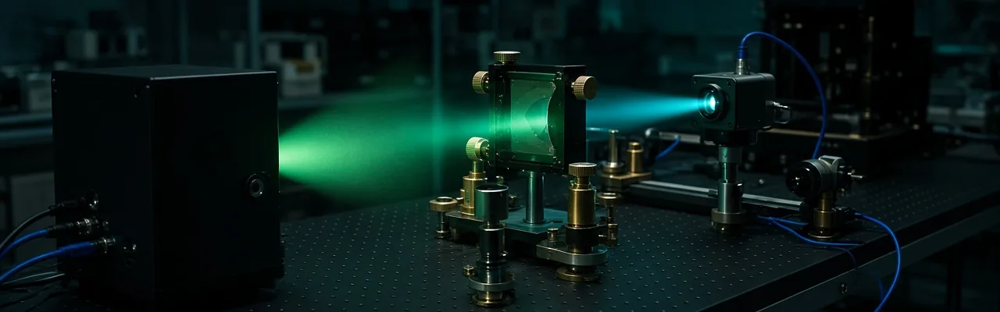

AI innen radiologi kan flagge et funn på en skanning uten å si nøyaktig hvor det sitter, slik at en radiolog må lete etter det før hun kan stole på vurderingen. ReXGroundingCT, utgitt av Pranav Rajpurkars forskningsgruppe ved Harvard Medical School og publisert i NEJM AI, kobler 8 028 funn beskrevet i vanlig tekst, fra 3 142 CT-skanninger av lungene, til nøyaktig 3D-plassering i skanningen. Det er den første offentlige databasen som kobler fritekst-funn i radiologirapporter til piksel-nøyaktig segmentering. Målet er enkelt: la modellen vise nøyaktig hvor den ser, slik at en kliniker kan sjekke arbeidet i stedet for å ta det på tro.
Kilde: ai.nejm.org →
De fleste detektorer for AI-genererte videoer sjekker én video i gangen, noe som ikke holder tritt med mengden video som lastes opp hver dag. Et team ved UCLA bygde et hybridsystem som bruker en programmerbar lysmodulator til å analysere flere videoer samtidig i ett optisk gjennomløp, og nådde 97,79 % nøyaktighet på en standard testbase for falske videoer. Testet mot videoer laget med Googles nyere Veo 3-generator, som systemet aldri hadde sett under trening, fanget det fortsatt opp rundt 94,8 % av dem.
Kilde: sciencedaily.com →De fleste språkmodeller leser tekst i biter kalt token, noe som er en av grunnene til at de kan ha problemer med å stave et ord bokstav for bokstav eller fange opp en enkelt skrivefeil. Modeller som leser rå byte i stedet unngår dette problemet, men har alltid ligget bak i evne. Et team fra Allen Institute for AI, Cambridge og Edinburgh publiserte en metode i Nature 7. oktober som bygger om eksisterende modeller, blant dem OLMo, Qwen3 og Llama 3, til byte-nivå-versjoner for under 1 % av kostnaden ved å trene en slik modell fra null, samtidig som mesteparten av den opprinnelige modellens evner blir bevart.
Kilde: allenai.org →